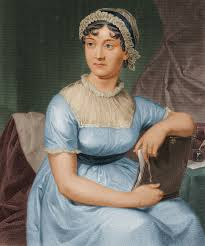

Квиз за делата на Џејн Остин
Квиз за делата на Џејн Остин
Квизот ќе ви го тестира знаењето за делата на Џејн Остин.
Која од следните опции е роман на Џејн Остин кој бил објавен по нејзината смрт?
"Гордост и предрасуда"
"Ема"
"Убедување"
"Разум и чувства"
Како првично се викал романот "Гордост и предрасуда" пред да биде преработен и објавен?
"Први впечатоци"
"Разум и чувства"
"Сестрите Бенет"
"Семејството Бенет"
Колку сестри има во семејството Дашвуд во "Разум и чувства"?
1 сестра
2 сестри
3 сестри
4 сестри
Кој од следните карактери не се појавува во "Ема"?
Хариет Смит
Ема Вудхаус
Господин Вестон
Џорџ Викам
Со кој од следните карактери се мажи Шарлот Лукас во "Гордост и предрасуда"?
Со никој
Господин Бингли
Господин Дарси
Господин Колинс

Испрати
Назад на почеток